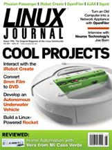

Shutdown Archive web server
Search:
Linux Journal
Issue #181/May 2009

Features
Linux-Powered Amateur Rocket Goes USB
by Sarah Sharp
The upgrade continues.
The Cambridge Autonomous Underwater Vehicle
by Andy Pritchard
The Germans probably would call it an Ubunturseeboot.
Linux-Based 8mm Telecine
by Frank Pirz
It's a power of 2, you gotta convert it!
Fun with the iRobot Create
by Zach Banks
Roll your own!
Indepth
Interview with Joe Born: CEO of Neuros Technology
by James Gray
Neuros Technology's Linux-powered open devices are driving TV-Internet convergence.
OpenFiler: an Open-Source Network Storage Appliance
by Bill Childers
An open-source alternative to a NetApp filer.
Columns
Reuven M. Lerner's At the Forge
Phusion Passenger
Dave Taylor's Work the Shell
More Special Variables
Mick Bauer's Paranoid Penguin
Building a Secure Squid Web Proxy, Part II
Kyle Rankin's Hack and /
When Disaster Strikes: Attack of the rm Command
Kyle Rankin and Bill Childers' Point/Counterpoint
AJAX
Doc Searls' EOF
Privacy Is Relative
Review
Control Your Home with Vera from Mi Casa Verde
by Daniel Bartholomew
In Every Issue
Current_Issue.tar.gz
Letters
upFRONT
New Products
New Projects
Archive Index
Shutdown Archive web server
Search:
Copyright © 1994 - 2018
Linux Journal
. All rights reserved.